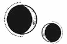

CAPÍTULO 57
Mayus 1787
Según los informes oficiales, Lila Bayard sufría un caso grave de tos de los pantanos que había contraído después de ayudar a transportar suministros a los suburbios sumergidos, en el extremo meridional de la isla.
La tos de los pantanos solía aparecer todos los años a principios de verano, después de las inundaciones, cuando el ambiente se tornaba cálido y húmedo, y los niveles más oscuros y escondidos de la ciudad, que estaban apartados de la luz solar, se cubrían de moho negro.
Los síntomas eran una tos expectorante y, en ocasiones, sarpullido. Aunque afectaba sobre todo a los niños y los ancianos, a veces se enquistaba y se volvía tan virulenta que contagiaba a toda la ciudad como si fuera una plaga. Esta era la razón por la que los niveles superiores de la ciudad solían evitar cualquier contacto con los sectores más bajos de la población.
Helena conocía bien los síntomas porque su padre los trataba todos los veranos. La mayoría de la gente que contraía la enfermedad no se podía permitir viajar a los niveles superiores para recibir el tratamiento de un boticario autorizado. Mediante la vivemancia, Helena podía replicar los síntomas a la perfección, así que creó unos sarpullidos morados en las muñecas y ambos lados del cuello de Lila, y cargó sus pulmones de flemas para que tosiera con fuerza cuando vino Pace a examinarla y hacer su diagnóstico.
Al vivir tanta gente en tan poco espacio, el miedo al contagio era constante.
A Lila no tardaron en aislarla en lo alto de la Torre de Alquimia, junto a todos los que habían participado en la entrega de suministros, aunque estos fueron declarados asintomáticos al cabo de tres días.
Una enfermedad tan común no afectó a la moral, especialmente porque se consideraba una dolencia propia de los pobres y de los entornos insalubres. Que Lila se hubiese contagiado solo se interpretó como un signo de que seguía demasiado débil después de tantas heridas. En las habitaciones superiores, bañadas por el sol de la Torre de Alquimia, se recuperaría rápidamente.
Sin embargo, Luc empezó a agobiarse. Exigió verla, pero se le negó rotundamente. Sus propios pulmones seguían deteriorados y dañados, por lo que bajo ninguna circunstancia se le permitía acercarse a Lila hasta que se recuperase por completo.
Helena no sabía por dónde empezar con aquel secreto. Nunca había estudiado los embarazos. Su experiencia con los partos se limitaba a situaciones de emergencia. Buscó en la biblioteca alguna referencia, pero todo lo que encontró le pareció escaso de información, y entonces recordó que la enfermera Pace guardaba muchos libros de medicina en el despacho para tenerlos más a mano.
—Nunca pensé que te interesaría la maternidad. —El comentario de la enfermera Pace hizo que diera un respingo cuando la encontró ojeando uno de los libros. Helena lo cerró de inmediato y lo colocó en su sitio.
—No me interesa, pero el título me ha llamado la atención.
—Puedes llevártelo, si quieres.
—No —negó moviendo la cabeza—, solo era curiosidad.
Se dirigió a la puerta.
—Marino. —La voz de Pace sonó autoritaria.
Helena se volvió. Pace la observaba como un halcón.
—¿Estás embarazada?
—No.
—A veces hay descuidos —replicó Pace apoyándose con calma en su escritorio—. Sobre todo, en tiempos de guerra. No serías la primera a la que le pasa.
A Helena se le escapó un resoplido de frustración.
—No estoy embarazada.
—Solo espero que tu pareja sea responsable…
—No puedo quedarme embarazada. Me esterilizaron —estalló Helena sintiendo una vergüenza tan profunda que no quería seguir escuchándola.
Pace se quedó muy quieta y, después, sacudió la cabeza.
—No. No harían tal cosa. Es imposible que lo consideraran necesario en los tiempos que corren.
A Helena le ardieron las mejillas, pero en el estómago sintió un vacío que se abría cada vez más.
—Pues lo hicieron. Maier, para ser más exactos. Me hizo una ligadura de trompas la semana que volví. Fue… fue una de las condiciones del falcón. Así que, como te digo, no estoy embarazada.
Volvió a girarse hacia la puerta.
—Helena, espera. —La voz de Pace sonó entonces suplicante.
Helena hizo un gesto y se volvió con desgana. Pace tenía una de sus manos rojas y agrietadas sobre el pecho.
—No debería haber insistido. No tenía ni idea. Maier nunca lo mencionó.
—No pasa nada —afirmó Helena con rigidez—. Prefería ser alquimista, y las mujeres no podemos tener ambas cosas. —Levantó la barbilla—. Ahora ya no tengo que preocuparme por decidir entre una u otra. Además —miró a Pace a los ojos—, seguramente muera joven, así que sería una madre horrible.
Pace la observó atentamente.
—¿Tu madre lo fue?
Aquellas palabras le hicieron más daño que si le hubiesen propinado una patada. La habitación le dio vueltas y sintió que se le formaba un nudo en la garganta.
—Cómo te atreves.
—Lo siento, no debería haberlo dicho así —admitió, aunque no parecía arrepentida—. Pero, Helena, no creo que estés siendo honesta contigo misma sobre lo que realmente quieres.
—Era la única forma de hacerme sanadora. Necesitábamos una e Ilva dijo que yo era la única que podría hacerlo. —Le temblaba la mandíbula, así que apretó los dientes para que no se notara—. Me pidieron que decidiera y eso hice. ¿Preferirías que no hubiese elegido ser sanadora?
—No tenías ni diecisiete años. No habías vivido lo suficiente para saber lo que querías.
—Me siento bastante viva ahora mismo —replicó Helena entre dientes—. Y estoy bien.
—Estar viva no es lo mismo que vivir. Espero que algún día tengas la oportunidad de descubrir la diferencia.
Pace se acercó a la estantería y sacó el libro que Helena había estado ojeando. Lo sostuvo con las dos manos y contempló la portada.
—Fui matrona, ¿lo sabías? Hace ya mucho tiempo. —Sacudió la cabeza—. Debería haberme dado cuenta antes. Siempre lo das todo en el momento presente, como si creyeras que solo vas a tener eso. —Se giró hacia Helena—. Si echas un vistazo a la siguiente generación, tal vez percibas el futuro como algo más real.
Extendió el libro hacia Helena. El título —La maternidad: un estudio exhaustivo sobre la ciencia y la fisiología de la gestación— resplandeció bajo la luz que entraba por la ventana de arriba.
—Lila Bayard va a necesitar los mejores cuidados posibles.
Helena la miró anonadada.
—¿Cómo…?
La enfermera Pace dejó el libro en sus manos.
—Llevo siendo enfermera el doble de años que tu vida. Tienes una habilidad excepcional para la vivemancia, pero Lila tendría que haberse pasado tres semanas enferma antes de que le aparecieran esos sarpullidos.
Conforme Luc fue haciéndose cargo de todo, la salud de Ilva empezó a declinar rápida y repentinamente, como si todos esos años hubiese aguantado para ver el momento en el que su sobrino nieto estuviese preparado. Había días en los que apenas estaba en sus cabales. Crowther, preocupado por el súbito deterioro de Ilva, le pidió a Helena que la examinara. No tenía ninguna enfermedad; simplemente era mayor y estaba cansada.
La guerra seguía siendo un tira y afloja para ambos bandos. Las escaramuzas constantes apenas aportaban ventaja, salvo para causar más destrozos a una ciudad ya devastada.
Luc lideró otro ataque contundente en la isla Oeste, donde lograron tomar un almacén. Lo encontraron lleno de tanques enormes con forma tubular y, en el interior, encontraron cadáveres con tubos en las venas y mascarillas sobre nariz y boca. Eran luchadores de la Resistencia. Todos estaban muertos, pero sus cuerpos aún conservaban calor.
Cuando rompieron el perímetro, las mascarillas suministraron un gas que los asesinó unos minutos antes de que la Resistencia pudiera rescatarlos.
Al Cuartel General llegaron camiones repletos de cadáveres para incinerarlos. Apenas habían hecho un par de prisioneros, pero una era la custodio del almacén, quien se mostró agresiva y se negó a responder a preguntas.
Como la custodio era una prisionera de Luc, no pudieron hacerla desaparecer en uno de los agujeros subterráneos de Crowther ni someterla a tortura para obtener información. Entonces, Crowther recordó que Kaine le había enseñado a Helena un método insólito para extraer información; ella misma lo había mencionado una vez para disuadirlo de seguir torturando.
Helena se horrorizó como los demás al ver esos rostros familiares, sanos e intactos, listos para la cremación, después de haber estado tan cerca de que los rescataran. Accedió sin pensárselo dos veces.
Tras hablar con un par de contactos, Crowther consiguió quedarse un par de horas a solas con la custodio, y llevó consigo a Helena.
La custodio era una mujer de rostro enjuto, cabello corto y boca ancha. Sus ojos azul claro se estrecharon en cuanto vio a Helena, como si la estuviera evaluando. Crowther se quedó en las sombras y dejó que Helena hiciera lo suyo.
—¿Quién eres? —preguntó Helena, que no sabía por dónde empezar.
—¿Y a ti qué te importa? —le espetó la custodio.
—La verdad es que no he conocido a ninguna mujer entre los inmarcesibles ni los aspirantes.
—A los hombres les suele gustar más nuestro cuerpo que nosotras. —La guardia miró el rincón desde donde observaba Crowther—. Supongo que debo de ser especial.
—¿Por qué? —preguntó Helena, aunque ya tenía una idea.
—Seguramente por el mismo motivo que tú. —La custodio se echó hacia atrás y miró a Helena de arriba abajo—. Aunque la diferencia es que yo no soy una traidora a los de mi clase.
—No soy yo la que acaba de asesinar a más de cien personas —afirmó Helena, esforzándose por mantener el temple. No sabía por qué le molestaba tanto que la custodio fuese mujer, pero esa idea la enfadaba.
—Ellos me habrían asesinado a mí si les hubiera dado la oportunidad. Yo los maté primero. —La custodio alzó la barbilla y señaló a Helena con ella—. ¿Qué eres? —La repasó con la mirada—. ¿Sanadora? Seguro que sí. Yo también fui sanadora.
Helena lo dudaba, pero la mujer estaba hablando libremente, así que dejó que siguiera.
—No quería ser sanadora, pero no hay muchas opciones para nosotras. Él quiso que me hiciera monja, que me dedicara a criar a otros mocosos que fueran como yo, que les enseñara a ocultar sus habilidades y los castigara si no lo hacían. ¿Verdad?
Helena se giró para mirar a Crowther, que lo observaba todo sin inmutarse.
—¿La conoces?
—Ah, sí. El cernícalo Jan solía venir a vernos cuando alguien se portaba mal en el orfanato. Siempre traía alguna mascota, alguien atado a quien podíamos admirar, en quien podríamos convertirnos si hacíamos todo lo que nos pedía. Pero me sorprende que seas tú; normalmente eran más jóvenes. —Posó los ojos en Helena.
—Ya basta, Mandl —replicó Crowther con aspereza.
La mujer sonrió de lado.
—¿Ves? Ya sabía yo que te acordabas de mí.
—Sonsácale la información y acabemos con esto —le ordenó Crowther a Helena.
La sanadora tomó aire, aunque Mandl parecía poco impresionada.
—No vas a obligarme a hablar —repuso—. Solía romperme los huesos y abrirme en canal por diversión. Solo para sentir algo en aquel agujero en el que nos criaron. Eres demasiado débil para hacerme daño, traidora.
—Te sorprendería —dijo Helena con el corazón en un puño.
Mandl se limitó a reír.
Los cadáveres del almacén eran una tragedia muy reciente. Todas esas personas, a solo unos minutos de que las rescatasen, habían muerto porque Mandl prefería hacerle daño a la Llama Eterna y a la Resistencia antes que arriesgar su propia libertad.
Helena no se engañaba a sí misma; la Llama Eterna no era el faro de moralidad que pretendían ser, pero ¿cómo podía alguien pensar que los inmarcesibles eran mejores?
—¿Por qué almacenabais a los prisioneros en esos tanques? —preguntó con voz calmada y firme.
Mandl sonrió y su boca ancha pareció estirarse en su rostro. Movió los dedos, a pesar de las esposas de metal inerte que la sujetaban.
—Venga, atrévete a tocarme. A ver quién se rompe primero.
La rabia de Helena cayó como una losa hasta el fondo del estómago. Se acercó a Mandl.
—Estoy segura de que se te da mucho mejor que a mí hacer daño a los demás. No puedo vencerte en tus términos, pero aquí estamos jugando con los míos.
Mandl miró la puerta y después a Crowther, y, por primera vez, sus ojos delataron cierto nerviosismo. Soltó una carcajada forzada.
—¿Qué me vas a hacer?
Helena se colocó detrás de ella.
—Creo que este truco no te lo sabes.
Mandl quiso doblar el cuello para ver qué estaba haciendo Helena, pero se apartó cuando ella apoyó la mano en la base de su nuca y entrelazó los dedos por su cabello corto. La prisionera retorció las manos, forcejeando para intentar liberarse de los grilletes.
—No pasa nada —dijo Helena con una voz tan fría y profesional como la resonancia que usó para bloquearle los nervios de su columna vertebral, evitando que su corazón sufriera un infarto o que algún órgano vital quedara dañado—. Supongo que haberse educado en la Academia tiene sus ventajas.
Helena reguló el ritmo de su corazón para amortiguar el terror que empezaba a apoderarse de la custodio. Como si hubiera abierto una válvula de gas, manipuló el cóctel hormonal que recorría las venas de Mandl y la forzó a calmarse para que no viera a Helena como una amenaza.
—Quieres responder a todas mis preguntas —dijo Helena con suavidad.
Mandl se rebeló con violencia, trató de resistirse moviendo el cuerpo sin cesar. Intentó extender su resonancia para bloquear la de Helena, pero ya era demasiado tarde.
—Puta… puta traicionera… —farfulló mientras Helena se abría paso entre sus emociones desbocadas.
La mirada de Mandl se nubló. Su mente y su cuerpo entraron en conflicto, y fue incapaz de resistirse cuando Helena se coló en sus recuerdos.
Kaine le había explicado el procedimiento de forma sencilla, pero a Helena le pareció mucho más complicado de lo que esperaba. El ruido de otra mente ocasionaba demasiado estrépito y energía en ella, y, unido al pánico de Mandl y sus intentos de zafarse, lo dificultaba todo aún más. Kaine, en cambio, siempre dejaba que los pensamientos de Helena vagaran a su antojo, y los atrapaba al vuelo. Helena no pudo evitar pensar que debía de existir una forma más fácil de hacerlo.
—¿Cómo te llamas?
«Elsbeth».
El nombre resonó desde todos los ángulos de su mente, hasta converger en un solo punto, al frente.
La cara de Mandl estaba inerte y un hilillo de baba le caía por una de las comisuras de la boca. Sin embargo, sus ojos seguían a Helena con una rabia cada vez más intensa. Su mente trataba de resistirse a la manipulación de Helena, pero sin éxito.
—¿Por qué almacenabais a los prisioneros en esos tanques?
Mandl intentó resistirse, pero un recuerdo emergió en su consciencia: un hombre uniformado estaba hablando: «… mantener los mejores especímenes…». La atención de Mandl se desvió por un instante a una mosca que pasaba por allí y el recuerdo se desvaneció.
Helena insistió de nuevo.
—Si recibieras un nuevo prisionero, ¿qué harías con él?
Los fragmentos de memoria eran como imágenes en movimiento, sonidos y sensaciones que se arrastraban como si se los llevase el viento. Helena oía voces, pero eran tan distantes que no distinguía las palabras.
Vio las paredes de un almacén, una luz verdosa que provenía de unas ventanas tintadas. Un chico, que le resultó vagamente familiar, se retorcía de dolor.
La imagen se desdibujó, pero sintió una punzada de anticipación.
El brillo de una aguja hipodérmica bajo la luz tenue. Un dedo golpeándola para explotar una burbuja de aire. De nuevo, el chico.
Desenfoque.
Hileras de cadáveres tendidos sobre camillas junto a los tanques. Un cuerpo hinchado con los ojos amarillentos y la piel gris descolorida. Alguien presionó el brazo del joven y dijo: «Me llevo a este».
Una solicitud que pedía diez sujetos que fueran mujeres, firmada por Artemon Bennet. Las manos de Mandl empujando una camilla en la que yacía un chico, aún con la mascarilla y los tubos enganchados mientras lo trasladaban a una sala vacía.
Cerró la puerta con cuidado. Sintió otro escalofrío en la columna.
Helena rompió el contacto con su mente y apartó las manos. De repente, deseó frotárselas hasta arrancarse la piel.
—¿Por qué lo hacéis? —preguntó. Tenía el vello erizado como escarpias. No quería volver a adentrarse en la mente de Mandl.
La custodio respiraba con dificultad y tenía las pupilas tan dilatadas que apenas se distinguía el iris azul.
—Te lo sacaré a la fuerza si no me respondes —insistió Helena, y la agarró del cabello—. ¿Prefieres eso?
Mandl torció el gesto en una mueca y escupió.
—Los mantiene frescos.
—¿Para qué?
—Para lo que sea. Cuerpos nuevos para los inmarcesibles. Sujetos de prueba. Necrómatas. Los necrómatas duran más si el cadáver es reciente. —Mandl jadeaba con la boca abierta; los labios cada vez se le agrietaban más.
—¿Cuánto tiempo los mantenéis allí?
Mandl sonrió con crueldad.
—Hay mucha demanda, así que no suelen estar más que unos meses. Las descargas eléctricas mantienen los músculos en forma. Ralentizamos sus constantes vitales.
Pasó lo que a Helena se le antojó una eternidad hasta que Crowther consideró suficiente la cantidad de información obtenida. Para entonces, los ojos de Mandl ya estaban tan perdidos que miraban en direcciones opuestas. La fiebre empezó a subirle y se desplomó hacia delante, temblando.
—Bueno —dijo Crowther, bajando la vista hacia Helena—, parece que vas a ser una buena sustituta de Ivy.
Helena no respondió. No quería volver a hacerlo. Se arrepentía de haber accedido a ello.
Se giró sin decir una palabra.
—Traidora —masculló Mandl a su paso.